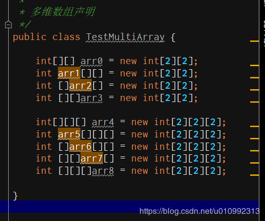
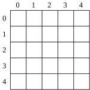
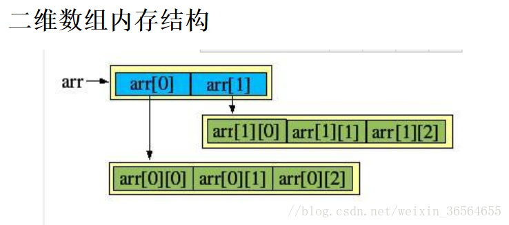
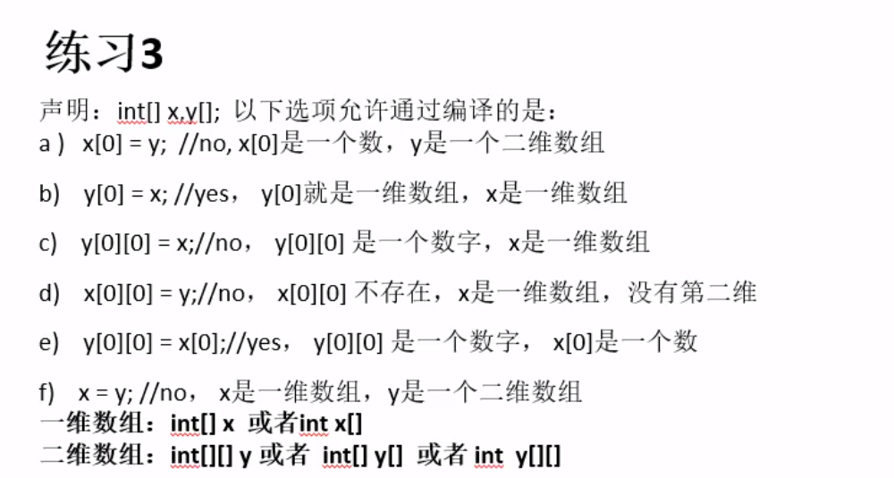

首先，为什么需要数组？数组帮助解决了什么问题？
数组主要解决的问题在我看来是减少了定义变量的次数。有时候我们有很多的数据要使用，在前面学习中我了解到数据要被使用就要放到变量中去，但是如果数据太多了，要定义的变量也会变得很多，而且都是一些重复劳动。在这样的情况下，如果可以将多个数据放到一个变量中去，那是最好不过了，因此就产生了数组。数组的主要作用就是用来存放相同类型的数据的。
一维数组
一维数组的声明方式：
int[] intArray0 ;
int intArray1 [];
动态初始化：数组声明且为数组元素分配空间与赋值的操作分开进行。
int[] arr = new int[3];
arr[0] = 3;
arr[1] = 9;
arr[2] = 8;
静态初始化：在定义数组的同时就为数组元素分配空间并赋值。
int a[] = new int[] {3,9,8};
int[] a = {3,8,9};
数组元素的引用
定义并用运算符new为之分配空间后，才可以引用数组中的每个元素；
数组元素的引用方式： 数组名[数组元素下标]
数组元素下标可以是整数常量或整数表达式。例如a[3]、b[i]、c[6*i];
数组元素下标从0开始，长度为n的数组合法下标取值范围为0~n-1。
每个数组都有一个属性length指明它的长度，例如：a.length指明数组a的长度(数组中有多少个元素)。
数组一旦初始化，其长度是不可变的。
数组元素的默认初始化
数组是引用类型，它的元素相当于类的成员变量，因此数组一经分配空间。其中的每个元素也被按照成员变量相同的方式被隐式初始化。数值类型的默认是0，对象的默认类型是null。
多维数组
多维数组的声明：

两种初始化形式
格式1: 动态初始化
数据类型 数组名 [ ][ ] = new 数据类型[m][n]
数据类型 [ ][ ] 数组名 = new 数据类型[m][n]
数据类型 [ ] 数组名 [ ] = new 数据类型[m][n]
举例：int [ ][ ] arr=new int [5][3]; 也可以理解为“5行3例”
格式2: 静态初始化
数据类型 [ ][ ] 数组名 = {{元素1,元素2....},{元素1,元素2....},{元素1,元素2....}.....};
举例：int [ ][ ] arr={{22,15,32,20,18},{12,21,25,19,33},{14,58,34,24,66},};
想象一下，一个二维数组看起来就像一个X-Y坐标系的矩阵。

然而，可能让Java开发者们感到惊讶的是，Java实际上并没有二维数组。
Java中所有一维数组中的元素占据了相邻的内存位置，因此是一个真正的数组。二维数组是一个数组的引用，其每一个元素都是另一个int数组的引用。

对于多维数组，我个人认为实际用到的数据就只有一个一维数组，多维数组只是将一个一维数组的数据多次使用而已。
